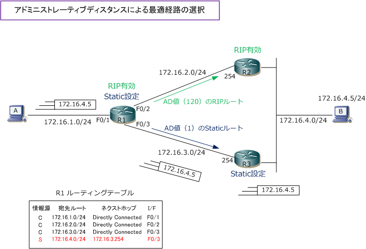

Administrative Distance
アドミニストレーティブディスタンス（ AD ）とは
1台のルータには、スタティックルートとダイナミックルートを混在させられます。また、1台のルータに 複数のルーティングプロトコルを設定できます。下図R1のルーティングテーブルで「172.16.4.0/24」の 宛先ルートをスタティックルートとして保持するだけではなく、RIPによるダイナミックルートとして受信 しているとします。このような場合には、ルータは信頼度の高いルーティングプロトコルからの情報だけを ルーティングテーブルに登録します。この信頼度を決めるための値がアドミニストレーティブディスタンス。

R1では「172.16.4.0/24」の宛先ルートに対してRIPによるダイナミックルートとスタティックルートの 2つの情報源があります。RIPのダイナミックルートとスタティックルートではスタティックルートの方が 信頼度が高い（AD値が小さい）ため、ルーティングテーブルでは、スタティックルートの経路情報を登録。
信頼度が高い（情報源：S 宛先ルート：172.16.4.0/24 ネクストホップ：172.16.3.254 インターフェース：FastEthernet0/3） 信頼度が低い（情報源：R 宛先ルート：172.16.4.0/24 ネクストホップ：172.16.2.254 インターフェース：FastEthernet0/2）
ただし、R3のルータがダウン（電源OFF）すればR1で設定しているスタティックルートはネクストホップが 見えなくなるので、ルーティングテーブルからスタティックルートが消えます。そしてR2から受信している RIPのダイナミックルートがR1のルーティングテーブルに登録されて、172.16.4.5 とはR2経由で通信します。
| Cisco機器におけるデフォルトのAD値 | ||
|---|---|---|
| ルート情報 | AD値 | 信頼度 |
| 直接接続ルート | 0 | 最も高い |
| スタティックルート | 1 | |
| EIGRP - サマリールート | 5 | |
| BGP - 外部 | 20 | |
| EIGRP - 内部 | 90 | |
| OSPF | 110 | |
| IS-IS | 115 | |
| RIP | 120 | |
| ODR | 160 | |
| EIGRP - 外部 | 170 | |
| BGP - 内部 | 200 | |
| 不明 ( Routing Table にのらない ) | 255 | 最も低い |
EIGRPやBGPの"外部"というルートは、他のルーティングプロトコルで再配布され、EIGRP/BGPルートに変換されたルートのこと。
ルーティングテーブルの比較基準には3つあります。 ① ロンゲストマッチ ② アドミニストレーティブディスタンス ③ メトリック
ルーティングテーブルにおける優先順位は例外なく ①、②、③の順番で比較されていくことになります。
ルーティングテーブルにパケットが着信した時にその パケットの宛先アドレスを見て、これらの優先順位に 従ってパケットが転送されていきます。この考え方は 非常に重要です。ネットワークエンジニアとして仕事 をしていく上で、常に求められるNW技術と言えます。